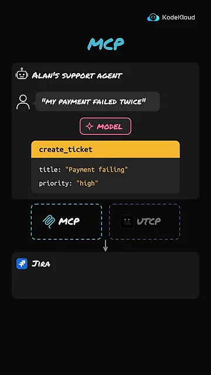
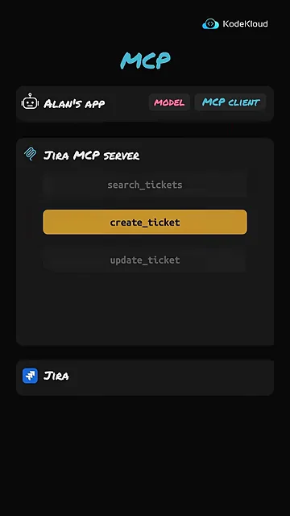
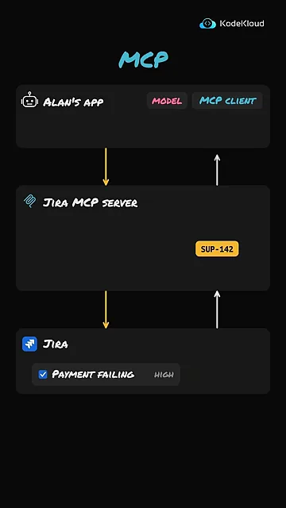
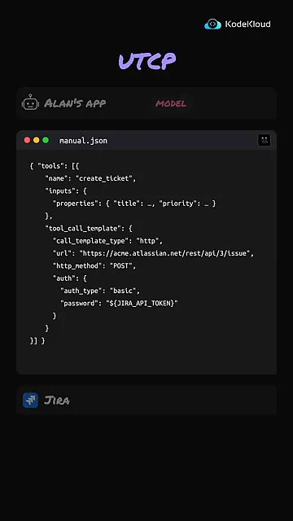
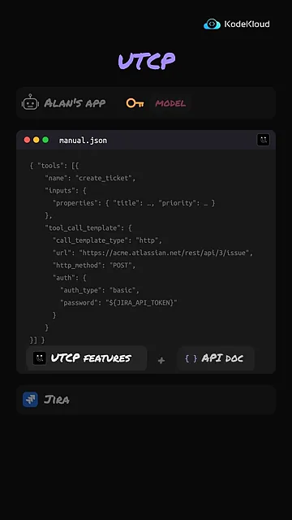
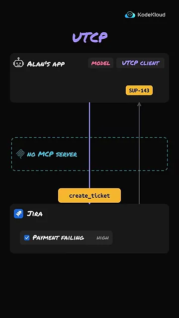
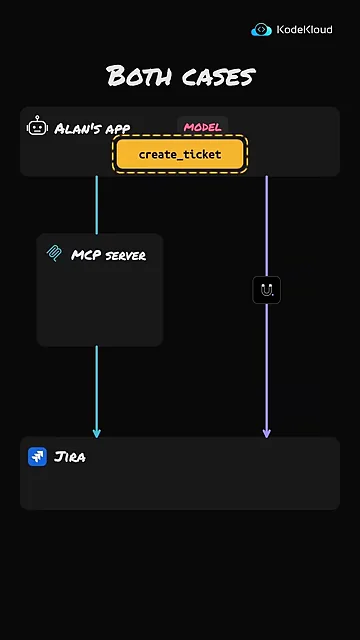
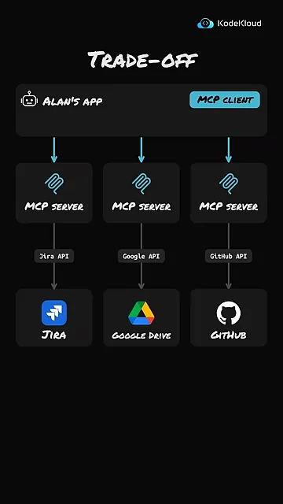
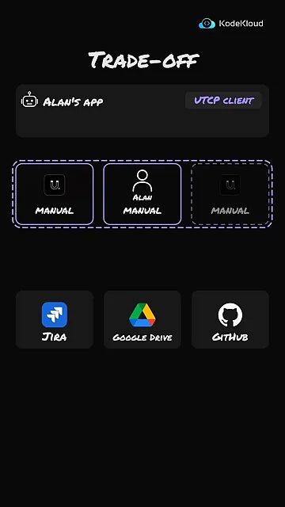

같은 문제, MCP로 풀면
Alan이 고객 지원용 AI(Artificial Intelligence) 에이전트를 만들고 있어요. 고객이 "결제가 두 번 실패했어요"라고 쓰면 에이전트가 Jira에 티켓을 만들어야 해요.
먼저 짚을 점이 있어요. 모델은 Jira를 직접 부르지 않아요. 모델은 도구 호출을 만들어 낼 뿐이고, 실제로 Jira를 부르는 건 앱의 코드예요. 아래 화면에서 노란 create_ticket 상자가 모델이 만든 도구 호출이에요. 제목은 Payment failing, 우선순위는 high예요. 그 아래 MCP와 UTCP 두 칸이 '실제로 부르는 부분'을 맡을 두 후보예요.

MCP는 중간에 서버를 둬요
MCP를 쓰려면 Alan의 앱에 MCP 클라이언트를 넣어요. 앱이 클라이언트를 부르고, 클라이언트가 Jira 쪽에 있는 MCP 서버를 불러요. Alan이 클라이언트나 서버를 직접 만들 필요는 없어요. Jira가 제공하는 MCP 서버를 그대로 쓰면 되고, 원하면 직접 만들어도 돼요.
앱이 연결되면 클라이언트가 서버에게 무슨 동작을 할 수 있는지 먼저 물어요. 서버는 아래처럼 search_tickets, create_ticket, update_ticket 세 가지를 알려 주고, 모델은 그중 가운데 티켓 만들기를 골라요.

요청이 MCP로 서버에 가면, 서버가 Alan이 허락한 권한으로 Jira에 티켓을 만들어요. 아래 화면 오른쪽 위로 올라가는 화살표가 돌아오는 길이에요. Jira가 준 티켓 번호 SUP-142가 MCP 서버와 클라이언트를 거쳐 앱까지 올라가요.

UTCP: 매뉴얼을 보고 직접 불러요
UTCP는 중간에 MCP 서버를 두지 않아요. 대신 Jira가 이미 가진 OpenAPI 명세를 써요. 아래 화면에서 MCP 서버 자리는 비었고, Jira 옆에 보라색 OpenAPI spec 꼬리표가 붙어요.
매뉴얼이 뭔가요
UTCP는 기존 API 문서를 가져와서 '매뉴얼'을 만들어요. 매뉴얼은 어떤 동작이 있고 그걸 어떻게 부르는지 적은 JSON(JavaScript Object Notation) 파일이에요. 화면의 manual.json을 위에서부터 보면 세 덩어리예요. 동작 이름(create_ticket), 받는 값(title, priority), 그리고 부르는 방법(tool_call_template)이에요.

화면의 매뉴얼을 옮겨 적으면 이래요. url은 POST 요청을 보낼 Jira API 주소이고, auth는 인증 방법이에요.
{ "tools": [{
"name": "create_ticket",
"inputs": {
"properties": { "title": …, "priority": … }
},
"tool_call_template": {
"call_template_type": "http",
"url": "https://acme.atlassian.net/rest/api/3/issue",
"http_method": "POST",
"auth": {
"auth_type": "basic",
"password": "${JIRA_API_TOKEN}"
}
}
}] }눈여겨볼 곳은 password 줄이에요. 실제 토큰 값이 아니라 ${JIRA_API_TOKEN}이라는 변수 자리만 있어요. 영상은 이걸 "인증 방법은 적되 실제 비밀 토큰은 드러내지 않는다"고 설명해요. Alan은 이 매뉴얼을 손으로 쓰지 않아도 돼요. 아래 화면 맨 아래처럼 UTCP 기능에 기존 API 문서를 넣으면 만들어져요.

호출은 직접 가요
앱이 시작되면 UTCP 클라이언트가 매뉴얼을 읽고 그 동작들을 모델에게 보여 줘요. 모델이 티켓 만들기를 고르는 건 MCP 때와 같아요. 그다음이 달라요. UTCP 클라이언트가 매뉴얼에 적힌 대로, Alan이 설정한 자격 증명으로 Jira API를 직접 불러요.
아래 화면 가운데 점선 상자에 'No MCP server'라고 적혀 있어요. 보라색 화살표가 그 상자를 뚫고 Jira까지 바로 내려가고, 티켓 번호 SUP-143도 앱으로 바로 올라와요.

결국 무엇이 다를까요
영상은 두 경로를 한 화면에 겹쳐 보여 줘요. 왼쪽 파란 화살표는 MCP 서버를 거쳐 가고, 오른쪽 보라 화살표는 UTCP로 바로 가요. 위의 노란 create_ticket은 하나예요.

MCP의 강점은 표준이에요
MCP를 쓰면 Alan의 앱은 Jira, Google Drive, GitHub 같은 여러 MCP 서버에 똑같은 방식으로 붙을 수 있어요. 모두 같은 표준을 따르기 때문이에요. 아래 화면에서 서버와 서비스 사이의 Jira API, Google API, GitHub API 꼬리표를 보세요. 서비스마다 다른 API는 서버 아래쪽에만 있고, 앱은 그걸 몰라도 돼요.

UTCP는 서비스마다 매뉴얼이 필요해요
UTCP는 연결하는 서비스마다 그 API 문서로 만든 매뉴얼이 있어야 해요. Jira 문서가 OpenAPI 명세라면 UTCP가 자동으로 매뉴얼을 만들어 줘요. 하지만 Google 문서가 다른 형식이라면 Alan이 직접 매뉴얼을 써야 해요. 아래 화면 가운데 칸에 사람 아이콘과 'Alan manual'이 있는 게 그 경우예요.

영상이 말한 차이를 표로 모으면 이래요.
| 항목 | MCP | UTCP |
|---|---|---|
| 앱에 넣는 것 | MCP 클라이언트 | UTCP 클라이언트 + 서비스별 매뉴얼 |
| 앱과 Jira 사이 | MCP 서버를 거쳐요 | Jira API를 직접 불러요 |
| 동작 목록을 아는 법 | 서버에게 물어봐요 | 매뉴얼을 읽어요 |
| Jira 권한 | MCP 서버가 Alan이 허락한 권한으로 써요 | 클라이언트가 Alan이 설정한 자격 증명으로 써요 |
| 새 서비스를 붙일 때 할 일 | 그 서비스의 MCP 서버를 연결해요 (보통 서비스 쪽이 제공) | 그 서비스의 매뉴얼과 로그인 정보를 챙겨요 (OpenAPI가 아니면 직접 써요) |